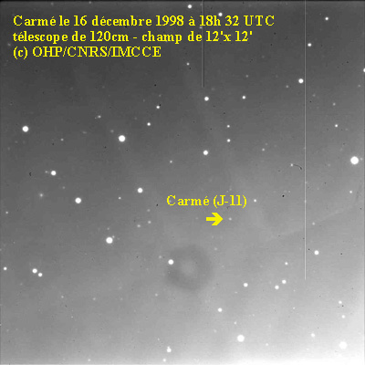
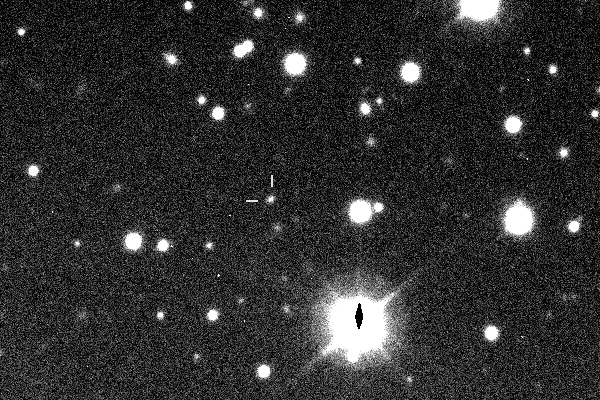
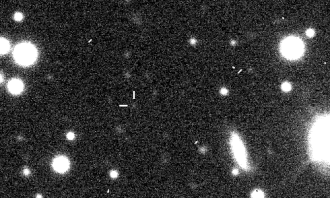
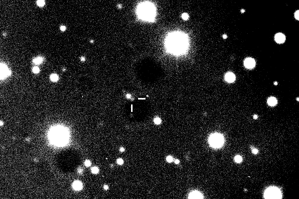

Карме (др.-греч. Κάρμη) — нерегулярный естественный внешний спутник Юпитера с ретроградным движением. Открыт в июле 1938 года американским астрономом Сетом Барнсом Николсоном в обсерватории Маунт-Вилсон. Названа в честь мифологической Карме, матери критской богини Бритомартиды.
Спутник получил имя в 1975 году, до этого использовалось обозначение Юпитер XI. В период с 1955 до 1975 года спутник иногда называли «Пан». В настоящее время Паном называется один из спутников Сатурна.
Карме входит в состав так называемой «группы Карме» — группы нерегулярных внешних спутников Юпитера с ретроградным движением, с радиусом орбиты 23—24 миллионов километров и наклонением около 165° (данные на 2000 год). Элементы орбиты группы постоянно меняются из-за возмущений, вызываемых Солнцем и Юпитером.

Калике (от др.-греч. Καλύκη) — нерегулярный спутник Юпитера, известный также как Юпитер XXIII.
Был обнаружен 23 ноября 2000 года группой астрономов из Гавайского университета под руководством Скотта Шеппарда и получил временное обозначение S/2000 J 2. В октябре 2002 года спутник назвали Калике (имя одной из возлюбленных Зевса).
Диаметр Калике составляет около 5 км. Плотность оценивается 2,6 г/см³, так как спутник состоит предположительно из преимущественно силикатных пород. Очень тёмная поверхность имеет альбедо 0,04. Звёздная величина равна 21,8m

Халдене (др.-греч. Χαλδήνη) — нерегулярный спутник планеты Юпитер с обратным орбитальным обращением. Названа именем персонажа из древнегреческой мифологии — Халдены, которая родила от Зевса героя Солима. Также обозначается как Юпитер XXI. Принадлежит к группе Карме.
Халдене была открыта группой учёных Гавайского университета под руководством Скотта Шеппарда в серии наблюдений, начиная с 26 ноября 2000 года. Сообщение об открытии сделано 5 января 2001 года. Спутник получил временное обозначение S/2000 J 10. Собственное название было присвоено 22 октября 2002 года.

Тайгете (др.-греч. Ταϋγέτη) — нерегулярный спутник планеты Юпитер с обратным орбитальным обращением. Названа именем Тайгеты, одной из плеяд в древнегреческой мифологии. Также обозначается как Юпитер XX.
Тайгете была открыта группой учёных Гавайского университета под руководством Скотта Шеппарда в серии наблюдений, начиная с 25 ноября 2000 года. Дополнительные наблюдения были произведены 12—13 октября 2001 года. Сообщение об открытии сделано 5 января 2001 года. Спутник получил временное обозначение S/2000 J 9. Собственное название было присвоено 22 октября 2002 года.